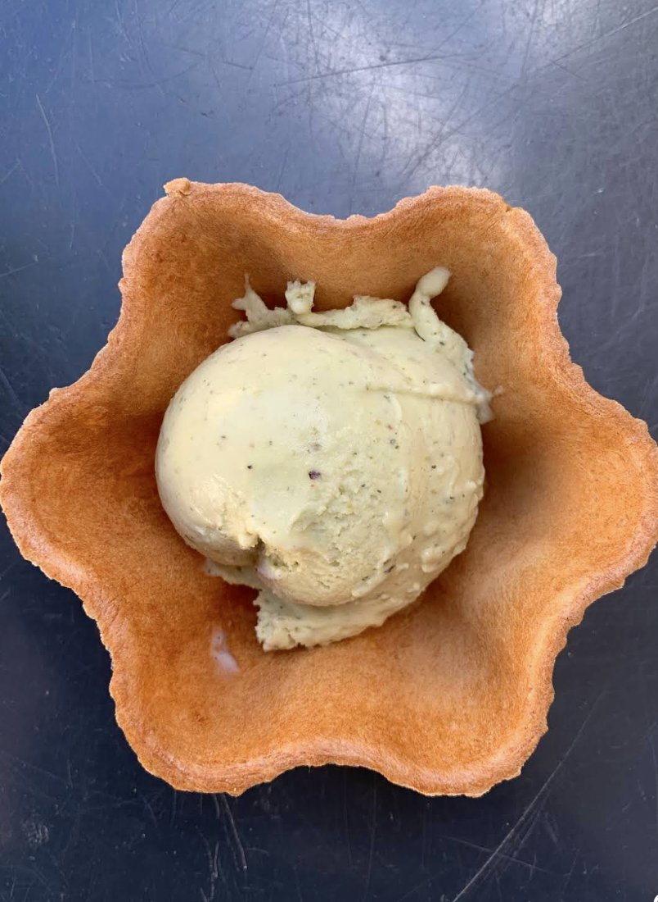
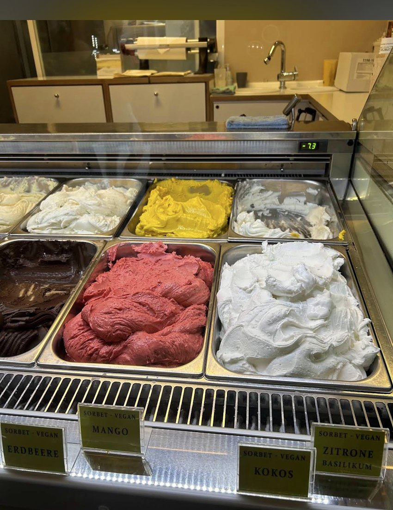
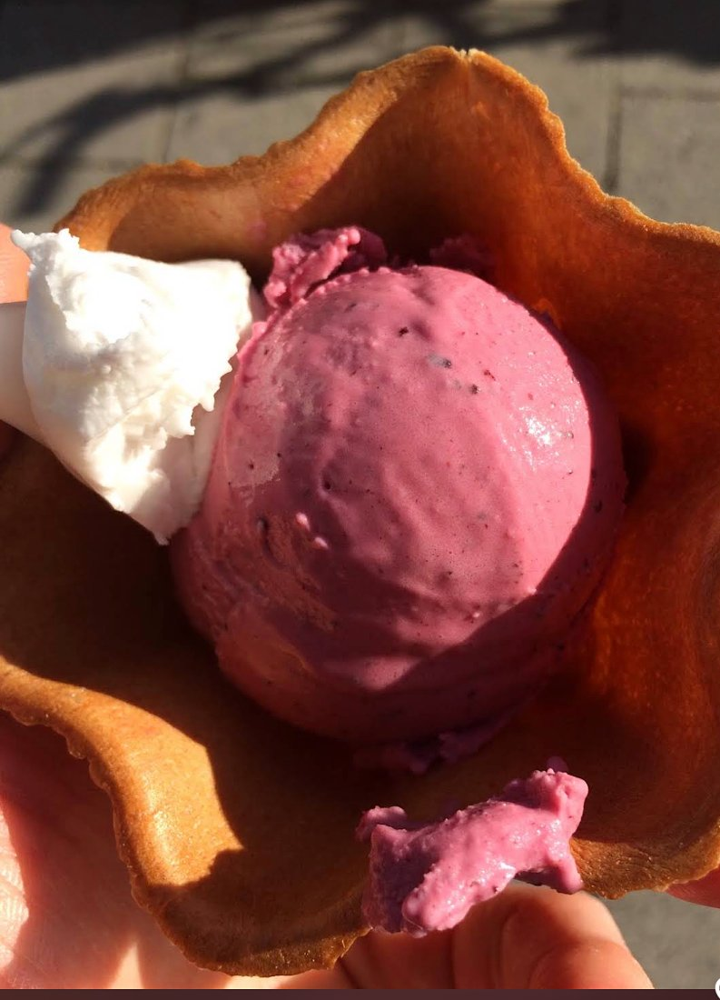
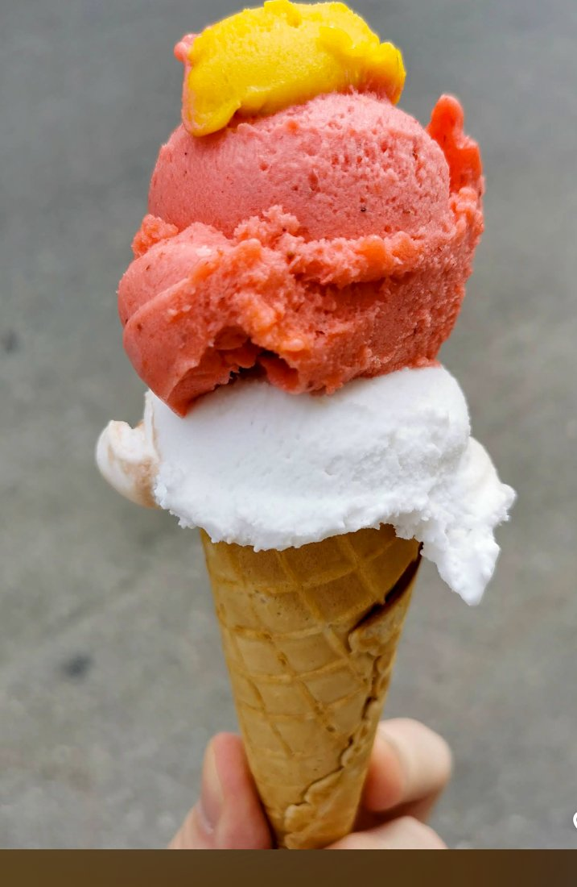
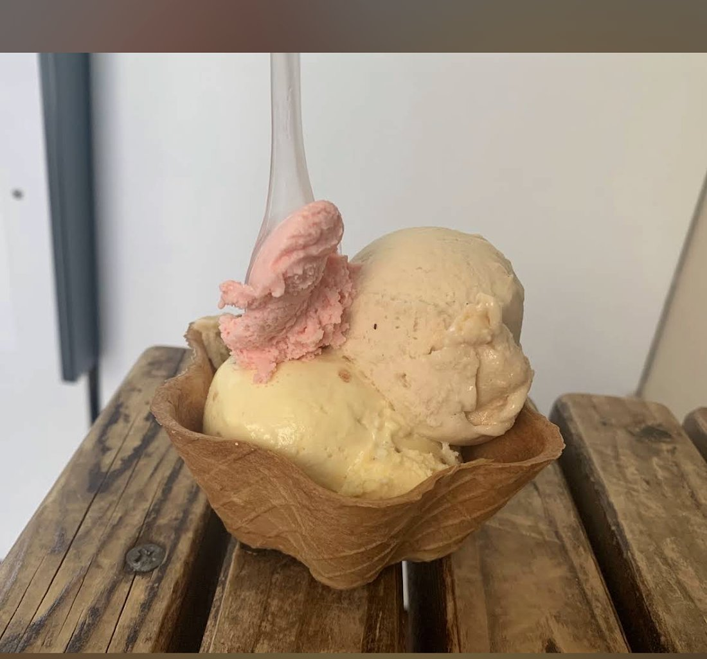
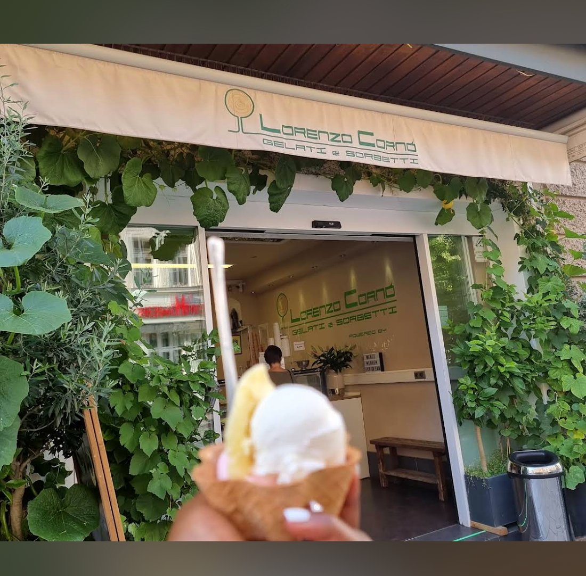
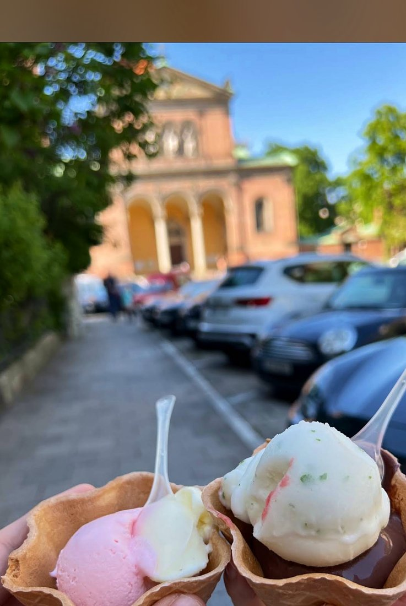
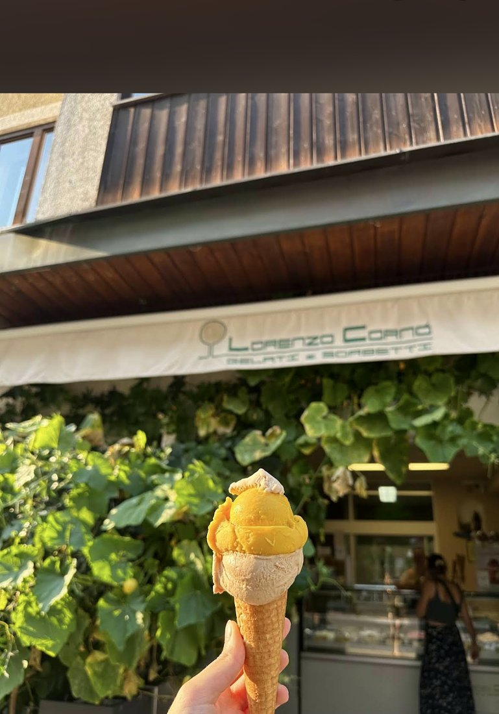
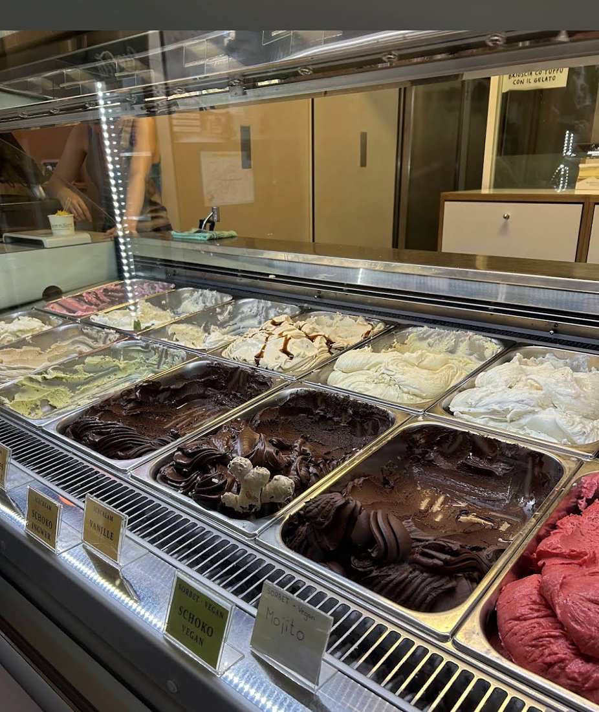

Pistazie & weiße Schokolade
Der meistgelobte Klassiker – nussig, cremig, unwiderstehlich.
Seit 1986 · Handgemacht in Schwabing
Handwerk aus Kalabrien, jeden Tag frisch hinter der Theke gerührt. In Sorten, die es sonst nirgendwo gibt.
Impressionen
Momente aus der Gelateria – festgehalten von Gästen vor Ort.







Der Lieblingsplatz der Locals
Zwei Minuten vom Laden, am Kaiserplatz – dort schmeckt das Gelato am besten.

Über Lorenzo
Lorenzo Corno stammt aus der Nähe von Cosenza in Kalabrien und macht in München Eis nach der ursprünglichen Tradition Süditaliens – Eismacher seit 1986. Das gesamte Gelato entsteht von Hand, in kleinen Mengen, direkt hinter der Verkaufstheke.
Neben Klassikern wartet die Theke mit Kreationen, die man so schnell nicht vergisst – und wer freundlich fragt, für den rührt Lorenzo auch mal eine Sorte auf Wunsch. Zu jedem Eis gibt’s ein Probierlöffelchen einer anderen Sorte obendrauf.
Unsere Sorten
Die Auswahl wechselt mit Saison und Laune des Maestros – diese Lieblinge tauchen immer wieder auf.
Der meistgelobte Klassiker – nussig, cremig, unwiderstehlich.
Dunkle Schokolade mit feuriger Ingwerschärfe – intensiv und lang im Abgang.
Espresso-Eis mit knusprigem Krokant – der Favorit vieler Stammgäste.
Blumig und zart – wie ein Spaziergang durch einen Sommergarten.
Nussig-geröstet mit asiatischer Note – cremig wie ein Espresso am Abend.
Veganes Sorbet, spritzig-frisch mit einem Hauch Kräuter.
Fein-nussig und ungewöhnlich – über diese Sorte spricht ganz Schwabing.
Frischer Joghurt trifft fruchtige Heidelbeeren – im Waffelblüten-Becher.
Dazu vegane Sorbets mit grünen Schildern – Mango, Erdbeere, Kokos, Zitrone-Basilikum, Mojito – und mit etwas Glück eine Sorte, die es morgen schon nicht mehr gibt.

Das sagen unsere Gäste
„Das Eis ist unglaublich lecker. Café Krokant, Pistazie-Weiße Schokolade, Rose-Hibiskus und Griechischer Joghurt sind meine absoluten Favoriten."
„Das beste Gelato, das ich je gegessen habe – und ich hatte es auf der ganzen Welt. Die Haselnuss war unglaublich!"
„Sehr angetan. Die Sorten Sesam, Pistazie / weiße Schokolade und Zitrone-Basilikum sind sehr zu empfehlen."
Besuch uns
Mitten in Schwabing-West, zwischen Hohenzollernplatz und Kurfürstenplatz. Am besten kommst du einfach vorbei – das Eis wartet schon.
Täglich 11:30 – 22:30 Uhr · Hohenzollernstraße 44, München
Jetzt Route planen